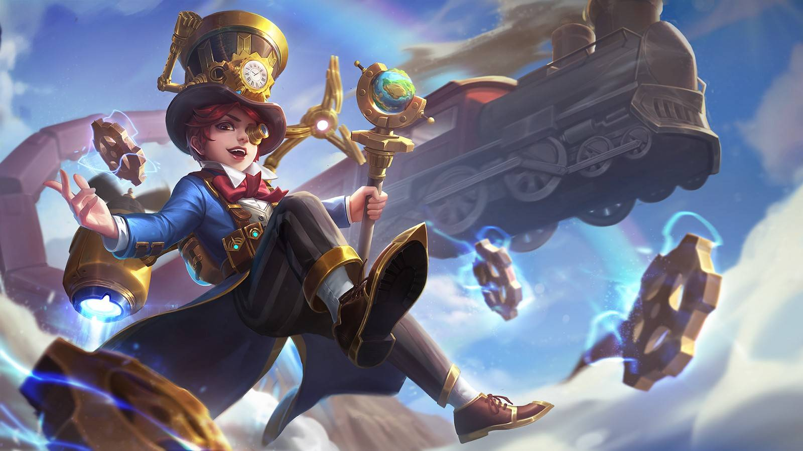

|  | |
|
Харли
|
|
|
Харли - герой класса маг/убийца. Его особенностю является неожиданность и огромный урон.
|
|
"Хей!Не трожь мои волосы!"
-Харли |
 |
Дата выхода: - 30 июля 2017 года |
|
| История героя: | |
| Харли обучался магии в Академии Льва, его знали все, он быстро учился и был отмечен Богиней Волшебства. Как и все дети, он любил приключения и однажды отправился с друзьями на ночные исследования джунглей. В лесу они подслушали разговор организации «Темные Маги», которые обсуждали свой заговор. В этот момент храбрый юноша, решает их остановить. Для этого он решает проследить за ними, что бы найти убежище злодеев и сообщить об этом директору школы. Во время поиска, он случайно, активировал пространственный портал и оказался на другой стороне Земель Рассвета — в Городе Ученых. Благодаря помощи профессора Руни и его друзей, он смог вернуться в Волшебный Город. И продолжил свои поиски логова Босса Темных Магов. | |
Слабые и сильные стороны: Слабые:
Cильные:
Сборка героя:
Эмблемы
Выбор линии:
Так, как Харли - убийца, в начале игры он отправляется в лес
Описание навыков:
~Шляпник
Пассивное: Мастер магии
Как маг, базовая атака Харли имеет дополнительно 60 (+ 50% физической атаки) (+ 60% магической силы) магического урона.

1 Навык: Покерный трюк
Харли бросает 3 ряда карт, которые наносят магический урон 150 (+ 25% магической силы) врагу, которого они встречают первым (урон уменьшается, если одна и та же цель поражается 3 раза или более), и увеличивают скорость атаки на 5% при каждом ударе, этот эффект может быть сложен до 12 раз и длится 3 секунды.

2 Навык: Побег из пространства
Харли мгновенно исчезает, оставляя шляпу на прежнем месте и вновь появляясь впереди, увеличивая скорость передвижения на 30% на 2 секунды. Используйте это умение снова через 4 секунды, чтобы вернуться в положение шляпы.

Ультимативная способность: Смертельная магия
Харли концентрируется на одном враге и использует огненное кольцо (которое могут удерживать другие вражеские герои), дает 200 (+ 60% магической силы) магии урона и замедляет их в течение 1,5 секунд. Затем это огненное кольцо будет прикреплено к известному врагу на 4 секунды. Харли может нанести дополнительный урон, атакуя это огненное кольцо своим умением. По истечении 4 секунд цель будет поражена 100 (+ 30% магической силы) магическим уроном плюс 40% урона, получаемого при распространении ее огненным кольцом.

|